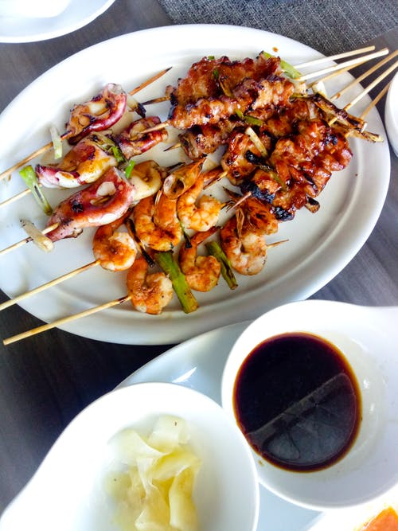

Breakfast Menu
|
|
|
|
| Acai bowl |
Pancakes |
Avocado toast |
Breakfast is considered an important meal because it breaks the overnight fasting period, replenishes
your supply of glucose and provides other essential nutrients to keep your energy levels up throughout
the day.
Lunch Menu
|
|
|
|
|
|
| Pizza |
Noodles |
Chicken Wrap |
Quinoa bowl |
Basil Pasta |
Lunch is an important meal for everyone. It provides energy and nutrients to keep the
body and brain working efficiently through the afternoon.
Dinner Menu
|
|
|
|

|
| Baked Salmon |
Orange Chicken |
Salad Wrap |
Kebab |
While it seems breakfast is the most important meal of the day, it might actually be dinner.
Our blood sugar control is best early in the day. When we eat dinner late, that's
when we're most vulnerable because our blood sugar is worst.